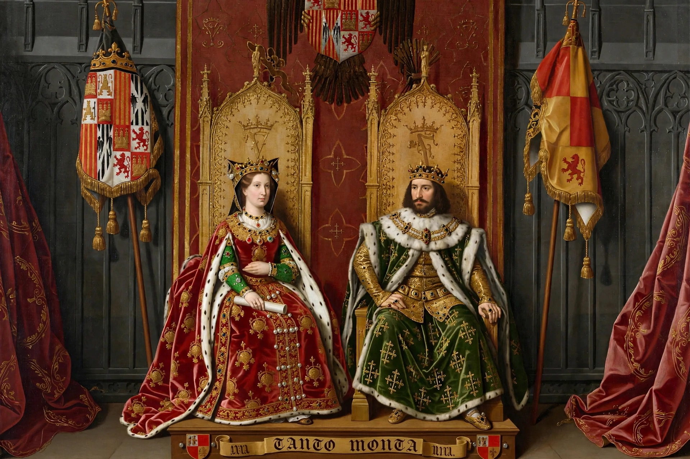

The Catholic MonarchsThe Catholic Monarchs (Spanish: Reyes Católicos) were Queen Isabella I of Castile and King Ferdinand II of Aragon, whose marriage in 1469 united the crowns of Castile and Aragon in a dynastic union that laid the foundations of modern Spain.
Their reign saw the completion of the Reconquista with the conquest of Granada in January 1492, the establishment of the Spanish Inquisition (1478), the expulsion of Jews who refused conversion under the Alhambra Decree (1492), and sponsorship of Christopher Columbus's voyage that reached the Americas in 1492. They centralised royal authority, curbed the nobility, reformed finances and created the Santa Hermandad police force.
Pope Alexander VI conferred the title "Catholic Monarchs" in 1496, recognising their defence and propagation of the faith. Spanish monarchs have retained the style "Catholic Majesty" since.
After Isabella's death in 1504, their daughter Joanna became queen of Castile; through her son Charles I (Emperor Charles V), the Spanish and Habsburg inheritances combined.